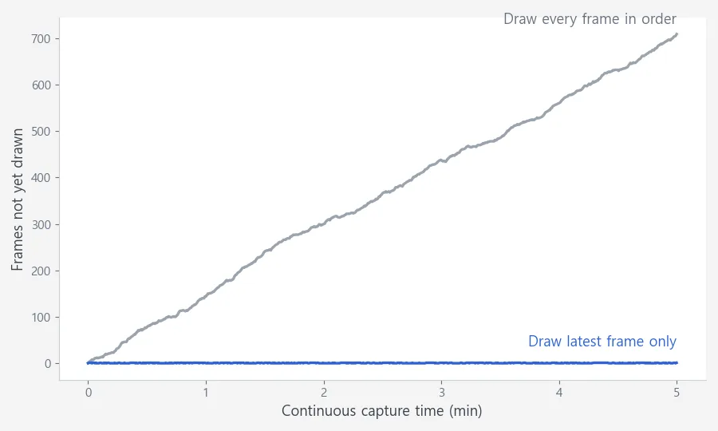

When drawing cannot keep up with the camera
What looked wrong
On the new tool, during long continuous capture the display fell further and further behind, memory kept growing, and in the end the program froze. Capture itself was fine. The problem was on the side that drew the received frames on screen.
Cause: a small slowness piles up without end
Say the camera sends a frame every 33 ms (30 fps) and drawing takes 36 ms on average. The gap is only 3 ms per frame, but if every received frame is drawn in turn, the number of frames not yet drawn keeps growing in proportion to time. When processing is slower than arrival, the queue can never shrink.

A bigger buffer only delays the freeze. The piled-up frames take memory, and the screen shows a moment further and further in the past.
The fix: only the latest frame, one at a time
The screen does not need to show every frame. What people look at is the current state. So when a new frame arrives, the previous frame that has not been drawn yet is dropped, and only one draw runs at a time.
// Concept code (C#). Keep only the most recent frame and a "drawing" flag
Frame? latest;
int drawing;
void OnFrame(Frame f) // camera thread
{
Interlocked.Exchange(ref latest, f)?.Dispose(); // drop the previous frame that was not drawn
if (Interlocked.CompareExchange(ref drawing, 1, 0) == 0) // if not drawing, schedule a draw
ui.BeginInvoke(Draw);
}
void Draw() // UI thread
{
var f = Interlocked.Exchange(ref latest, null);
if (f != null) { Render(f); f.Dispose(); }
Volatile.Write(ref drawing, 0);
// if a new frame arrived while drawing, run once more
if (Volatile.Read(ref latest) != null && Interlocked.CompareExchange(ref drawing, 1, 0) == 0)
ui.BeginInvoke(Draw);
}- I split what can be dropped (the display) from what must not be dropped (inspection results, images to save) into separate paths. The code above is used only on the display path.
- So that a frame arriving during a draw is not missed, it checks once more after clearing the flag.
- On the tool, this fix together with the move to 64-bit and camera reconnection gave 0 freezes over 20 slots in a row, and memory went from 18 GB to 12 GB.
Takeaway
A queue whose processing is slower than arrival will overflow sooner or later, whatever the buffer size. First decide “can this data be dropped?”, and on the paths where it can, keep only the latest value. Also check that the worst-case processing time, not the average, is shorter than the arrival interval.
To calculate it yourself from your own settings or timing logs, use the Frame backlog simulator. Run the "Slow drawing" example for 5 minutes and hundreds of frames pile up, as in the figure above.
The figure and code were made from scratch to explain the principle. They are not code from the equipment.